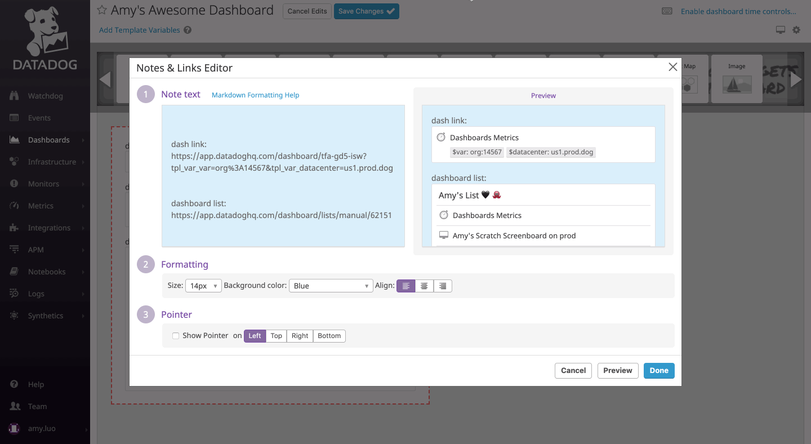

I worked at Datadog as a Software Engineering Intern on the Dashboard Team from January to June 2019. I focused on mostly front-end projects that had visual changes to the dashboards product. I worked mainly with React and in Python when backend changes were needed.
Dashboard links in the Note widget was a feature I developed and was released to customers. The purpose of this feature was to improve navigation between dashboards and add the ability to group related boards.
For this feature, I worked on displaying rich previews for raw urls that linked to other dashboards or dashboard lists. I also implemented a new editor that showed a live preview of any markdown or links in the note.
Below is a comparison between the updated and old Note widget editors.
This proved to be actually quite challenging to implement, as first urls had to be recognized and parsed to see if it is a dashboard or dashboard list url. The dashboard ID then had to be extracted from the url, and an API call was made to the backend to retrieve the information to display such as the dashboard title, type, and template variables. I attended weekly meetings with the product designer and product manager to go over new designs, and assess the progress of the project.
Another project I worked on at was Dashboard Details. View the Datadog blog post here.

This feature was also related to adding context and organization to dashboards. Relevant information about the specific dashboard is displayed by clicking on the caret my the dashboard title. This reveals a dashboard description, which supports markdown and is editable on custom boards, suggested dashboards which comes from the data science team, and top users.